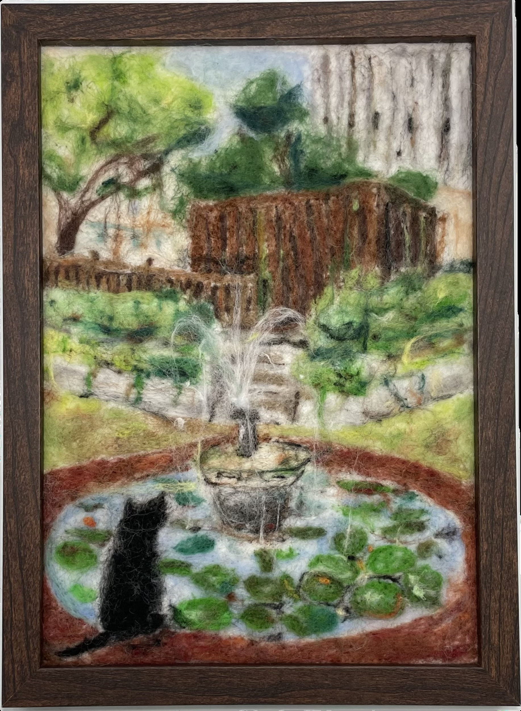

作品名稱：貓和水池
作者姓名：黃閔慧
作品主題：想像中有一隻黑貓獨自坐在水池邊
作品敘述：偶然拍到水滴落入水面的瞬間，覺得只有水池有些單調，於是加上一隻經常在校園看到的小黑貓增加整幅畫的活力。
I accidentally captured the moment when a water droplet hit the surface of the water. Feeling that the pond alone seemed a bit plain, I added a small black cat, often seen on campus, to bring more life to the scene.